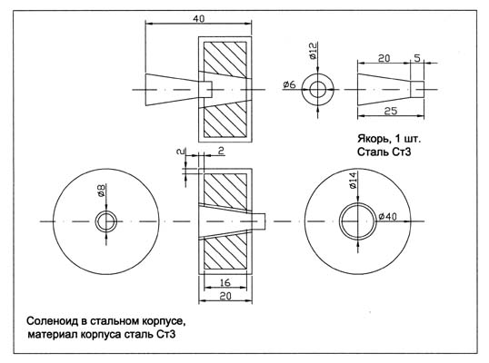
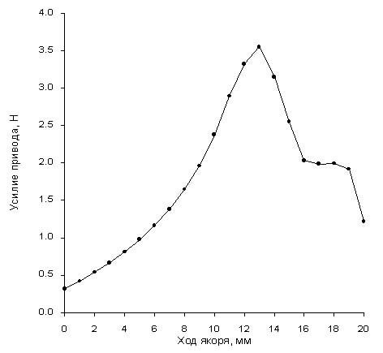
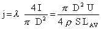

Расчет электромагнитного привода постоянного тока с втяжным якорем конической формы
1. Конструкция привода
Выполнявшиеся расчеты [5] электромагнитного привода (ЭМП) постоянного тока с втяжным якорем [3] цилиндрической формы, конструкция которого приведена на рис. 1.1, продемонстрировали, что относительный ход якоря (отношение хода якоря к длине привода) не слишком большой при существенном изменении усилия.
Рис. 1.1. Конструкция ЭМП постоянного тока с втяжным якорем цилиндрической формы: обмотка - медный или алюминиевый провод; корпус, крышки, вставка, якорь - низкоуглеродистая сталь.
Для того, чтобы определить возможность увеличения относительного хода якоря при приемлемом изменении усилия, было решено провести расчет ЭМП с якорем конической формы, конструкция которого показана на рис. 1.2.

Рис. 1.2. Конструкция ЭМП постоянного тока с втяжным якорем конической формы: соленоид наматывается медным или алюминиевым проводом; корпус, якорь - низкоуглеродистая сталь.
Данный ЭМП состоит из цилиндрического стального корпуса, в который помещается токопроводящая (обычно медная) обмотка (соленоид) с коническим отверстием. С обоих сторон корпус закрывается стальными крышками с отверстиями. Якорь конической формы может входить в коническое отверстие обмотки. Между якорем и обмоткой должен оставаться небольшой зазор. При пропускании электрического тока через обмотку якорь создает тяговое усилие, стремясь втянуться внутрь обмотки. Для возврата якоря в исходное положение при отключении тока может использоваться пружина (на чертеже не показана). Среднее усилие, развиваемое приводом на длине хода якоря 20 мм, должно составлять не менее 0.3 Н. Напряжение питания 12 В.
2. Расчет допустимой плотности тока в обмотках
От плотности тока в обмотке зависит мощность тепловыделения и, соответственно, температура обмотки. Эта температура не должна превышать допустимой для данной марки провода. Расчет температуры внутри обмотки и, соответственно, допустимой плотности тока в обмотках можно произвести методом конечных элементов [1, 2, 4, 6]. Величина допустимой плотности тока в проводах обмоток зависит от конструкции ЭМП и для соленоидов с толщиной обмотки до 20 - 30 мм может достигать 5 ... 8 А/мм2 при длительной работе в воздушной среде температурой до 40 0C.
Если фактор упаковки принять равным 0.6, то при плотности тока в обмоточном проводе 5 А/мм2 плотность тока в самой обмотке составит 5 ∙ 0.6 = 3 А/мм2. При этом превышение температуры обмотки над температурой окружающей среды будет не более 60 0C, а теплостойкость изоляции обмоточного провода должна быть примерно 100 0C.
Если плотность тока в проводе обмотки достигает 8.4 А/мм2 (плотность тока в обмоточном проводе 8.4 А/мм2, плотность тока в самой обмотке 5 А/мм2), то превышение максимальной температуры обмотки над температурой окружающей среды при длительной работе может достигать 150 0C. Если режим работы ЭМП повторно-кратковременный (например, время включения - несколько секунд, отношение суммарного времени включения к общему времени работы до 50 %), то такая плотность тока может быть вполне допустимой.
3. Расчет тягового усилия ЭМП
Расчет распределения магнитного поля и возникающих при этом усилий можно произвести методом конечных элементов [1, 2, 4, 6]. В таблице и на рис. 3.1 представлен результат расчета.
| Ход якоря, мм | 0 | 1 | 2 | 3 | 4 | 5 | 6 | 7 | 8 | 9 | 10 | 11 | 12 | 13 | 14 | 15 | 16 | 17 | 18 | 19 | 20 |
| Усилие привода, Н | 0.32 | 0.42 | 0.54 | 0.67 | 0.81 | 0.98 | 1.17 | 1.38 | 1.65 | 1.96 | 2.38 | 2.89 | 3.32 | 3.55 | 3.15 | 2.55 | 2.03 | 1.99 | 1.99 | 1.92 | 1.22 |

Рис. 3.1. Зависимость усилия, развиваемого ЭМП, от хода якоря.
Для возврата якоря в первоначальное положение можно применить пружину, усилие сжатия которой нарастает линейно примерно от 0.1 до 0.6 Н при сжатии на 20 мм. Тогда средняя величина усилия, развиваемого системой привод - пружина, будет превышать требуемые 0.3 Н.
4. Расчет диаметра обмоточного провода
От диаметра обмоточного провода зависит активное сопротивление соленоида и, следовательно, ток в обмотке при заданном напряжении питания. Выбирая диаметр провода, необходимо добиться требуемой плотности тока в обмотке (в данном случае - 5 А/мм2).
Число витков N провода диаметром D определяется площадью окна обмотки S соленоида и фактором упаковки l:

Тогда сопротивление соленоида R может быть рассчитано следующим образом:

где LAV - средняя длина одного витка, r - удельное электрическое сопротивление обмоточного провода.
Ток I, текущий в обмотке сопротивлением R под действием напряжения U, определяется законом Ома:

Плотность тока j в обмотке:

Отсюда может быть найден диаметр обмоточного провода:

Для рассматриваемого случая U = 12 В, j = 5000000 А/м2, LAV ≈ 0.074 м, S ≈ 0.0002 м2, r ≈ 1.67 · 10-8 Ом · м (медный провод), l ≈ 0.6. Тогда:
D ≈ 0.18 мм
N ≈ 4715
R ≈ 229 Ом
I ≈ 52 мА
Усилие, развиваемое приводом, может быть увеличено за счет увеличения плотности тока в обмотке при соответствующем сокращении относительного времени нахождения обмотки под током. Для этого надо увеличить диаметр обмоточного провода. Если есть запас по развиваемому усилию, то можно соответственно уменьшить плотность тока в обмотке, при этом облегчится тепловой режим работы обмотки привода. Для этого диаметр обмоточного провода следует уменьшить.
По вопросам расчета конкретных конструкций ЭМП обращайтесь к автору (см. раздел Контактная информация).
Ссылки:
28.03.2008
Альтернативные источники
энергии
Компьютеры и
Интернет
Магнитные поля
Механотронные системы
Перспективные
разработки
Электроника и
технология